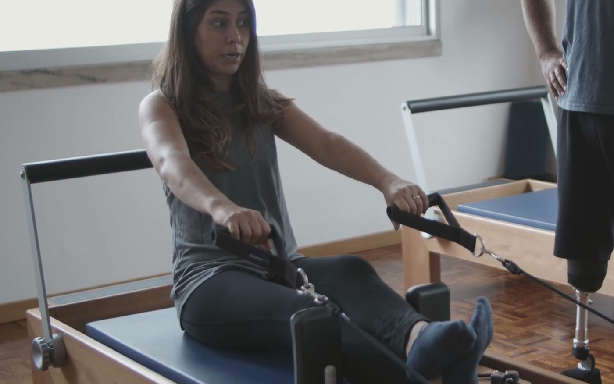
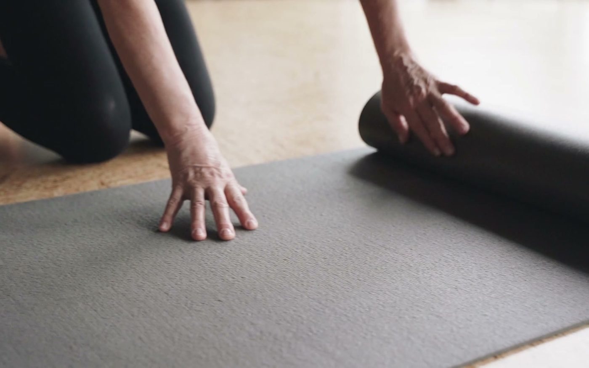
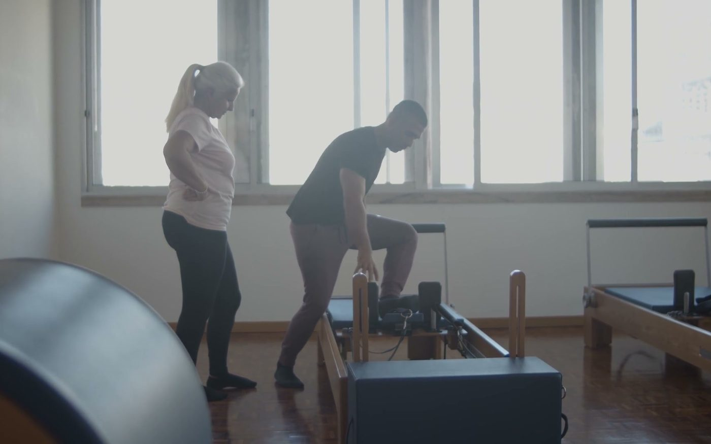
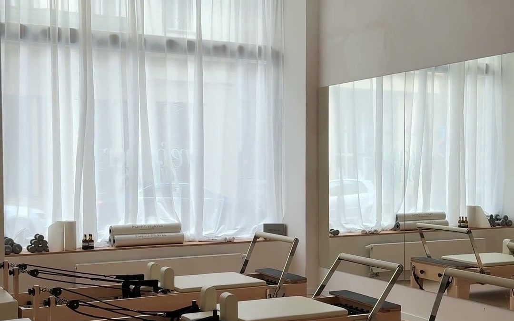
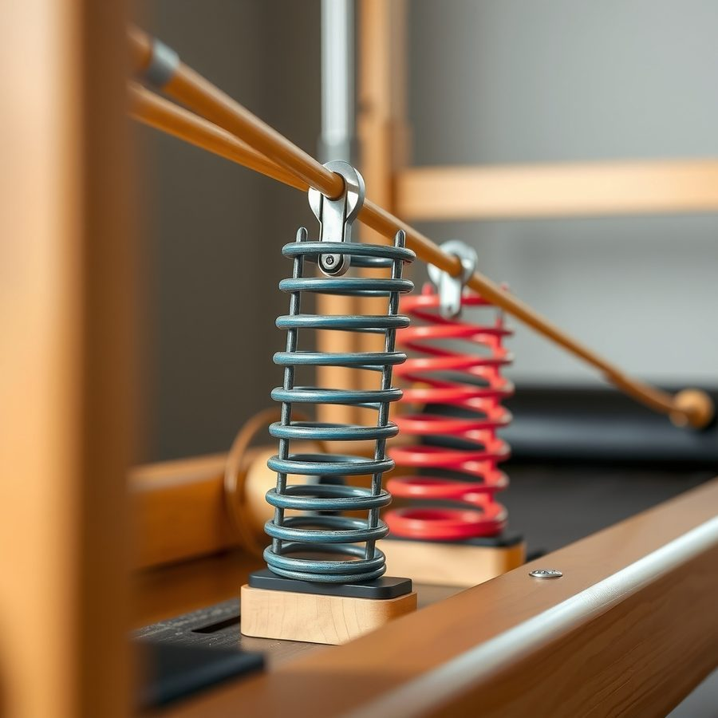
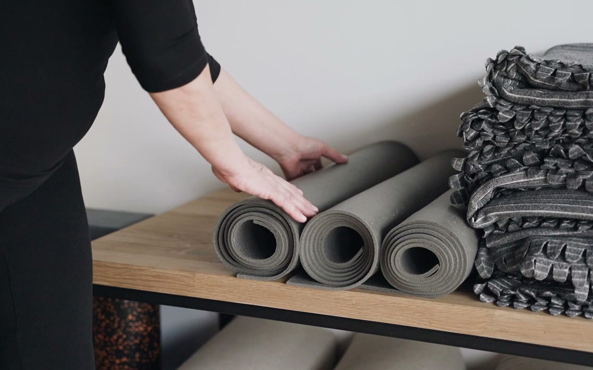
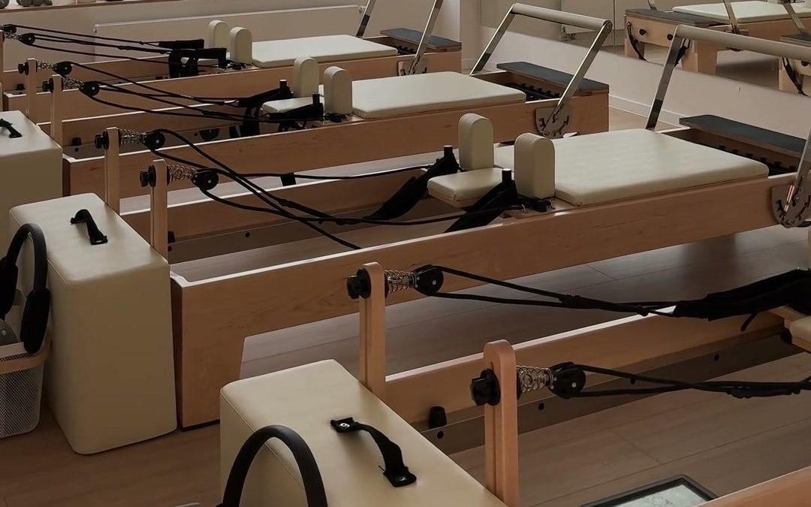

Reformer Pilates
Reformer aletinde grup dersi.
Tempo: Orta
İlk dersiniz deneme dersi. Seviyenize birlikte bakıp size uygun grubu seçiyoruz.
Seviyenize uygun grupta başlarsınız.
Yay direncini her derste seviyenize göre ayarlıyoruz. Yay renkleri derste gerçekten böyle: sarı hafif, mavi orta, kırmızı yoğun.

Reformer aletinde grup dersi.

Alet yok; minder ve kendi vücut ağırlığınız.

Eğitmenle yalnız çalışırsınız. Eğitmen programı size göre kurar.
Adınızı, telefonunuzu ve size uyan gün ve saatleri yazıyorsunuz. İki dakika sürer.
Gün ve saati birlikte belirliyoruz. Daha önce pilates yapıp yapmadığınızı soruyoruz.
Dersten sonra seviyenize uygun grubu birlikte seçiyoruz.




"Belim ağrıyordu, eğitmen ilk derste hareketleri buna göre değiştirdi. Üç aydır haftada iki gün geliyorum."
"Hiç pilates yapmamıştım. Deneme dersinde aleti baştan anlattılar, kendimi acemi gibi hissetmedim."
"Gruplar kalabalık değil, eğitmen herkesin duruşunu tek tek düzeltiyor."
Yorumlar örnektir; gerçek sitede stüdyonun Google yorumları gösterilir.
| Pazartesi | 08:00–21:00 |
| Salı | 08:00–21:00 |
| Çarşamba | 08:00–21:00 |
| Perşembe | 08:00–21:00 |
| Cuma | 08:00–21:00 |
| Cumartesi | 10:00–17:00 |
| Pazar | Kapalı |
Saatler örnektir; gerçek sitede stüdyonun kendi saatleri yazar.
Formu doldurun, sizi arayalım.